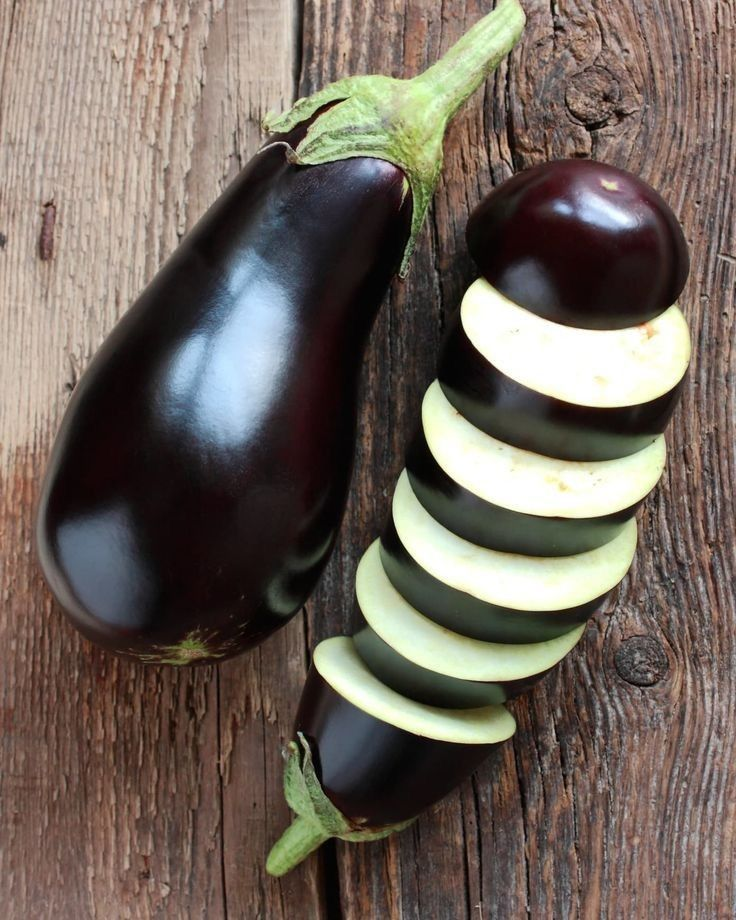

Berinjela
🌱 Como cultivar
A berinjela prefere clima quente e solo bem drenado e rico em matéria orgânica. Plante em local com bastante sol direto e regue regularmente, sem encharcar. É importante manter o solo sempre fértil e livre de ervas daninhas. A colheita geralmente ocorre de 100 a 120 dias após o plantio, quando os frutos estão brilhantes e firmes.
🍽️ Receitas
💡 Curiosidade
A berinjela é tão versátil que, na Índia, algumas pessoas usam sua casca para fazer “cordas” temporárias em brincadeiras de crianças! Além disso, ela muda de cor dependendo da variedade: roxa, branca, verde ou até listrada.